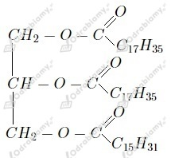
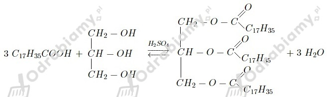
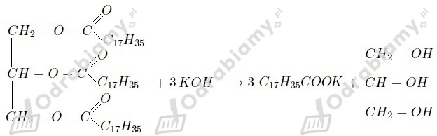
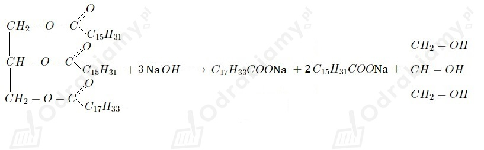
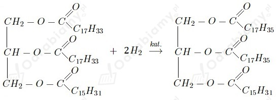
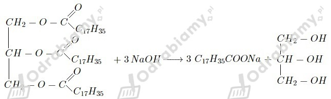
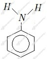
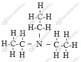

Wzór tłuszczu:

1.
2.

3.

a)
Nazwa produktu organicznego: tristearynian glicerolu
b)

Nazwa produktów organicznych: oleinian sodu, palmitynian sodu, glicerol
c)

Nazwa produktu organicznego: 1-palmitynian-2,3-distearynian glicerolu
Mydło uzyskać można ze stearyny . Jest to mieszanina nasyconych kwasów tłuszczowych, które mogą ulegać reakcji zmydlania. Parafina zaś jest mieszaniną stałych alkanów, a te nie tworzą mydeł.
Uwaga! Treść zadania nie podaje jakiej zasady należy użyć do zapisu reakcji zmydlania. Jest to duże utrudnienie, ponieważ w zależności od użytej zasady, zmieni się masa otrzymanego mydła, a tym samym otrzymamy inny końcowy wynik obliczeń masy tłuszczu. Aby wynik był zgodny z odpowiedzią podaną w książce, należy założyć, że otrzymujemy mydło sodowe.
Równanie reakcji:

Z równania reakcji widzimy, że stosunek molowy tłuszczu do otrzymanego mydła wynosi 1:3. Masa molowa otrzymanego mydła sodowego wynosi 306 g/mol.
Odpowiedź: W reakcji użyto 194 g tłuszczu.
Aminami pierwszorzędowymi są:
a) etyloamina (lub etanoamina)
c) metyloamina (lub metanoamina)
e) benzenoamina
a)
 benzenoamina
b)
c)
 trietyloamina
Do amidów należy jedynie związek b .